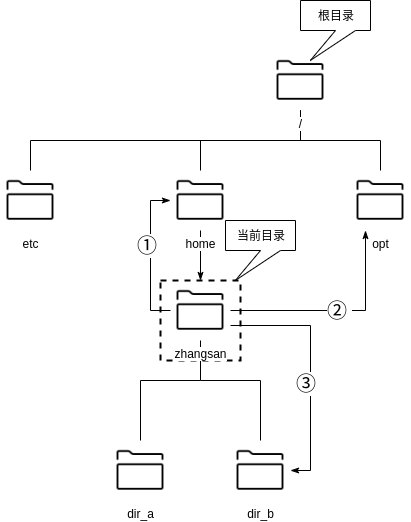
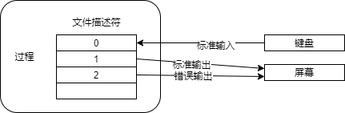

3.2 管理文件和目录¶
在命令行中处理文件和目录¶
在命令行中操作文件系统中的文件和目录时，需要了解如何管理这些文件和目录以及管理文件系统的常用命令。
在 Linux 系统中执行操作时，用户必定在文件系统的某个目录位置中。我们一般将当前所处的目录称为当前目录。下图中“zhangsan”是用户zhangsan的初始目录，下面将其作为的那个前目录进行介绍。
切换目录¶
cd命令用于在文件系统上切换目录。
cd [目录]
目录可以是绝对路径，也可以是相对路径。绝对路径从根目录（/）开始，并以斜杠（/）分隔所需目录的路径。此外，相对路径从当前目录，表示所需目录的路径。你可以使用以下目录符号：
符号 |
说明 |
|---|---|
~ |
初始目录，表示当前执行用户的工作目录。 |
. |
当前目录，表示当前执行用户的所处的目录。 |
.. |
父目录，以当前目录为准，表示上一级目录。 |
在图3-2-1中所示的当前所在路径为用户工作目录“/home/zhangsan”，①②③分别表示切换到不同的目录下。如何使用绝对路径或相对路径切换到相同的路径，参考下表。
编号 |
绝对路径 |
相对路径 |
|---|---|---|
① |
cd /home |
cd .. |
② |
cd /opt |
cd ../../opt |
③ |
cd /home/zhangsan/dir_b |
cd dir_b |
除此之外，如果登陆用户为 zhangsan，无论当前在哪个目录下，使用“cd”，“cd ~”，“cd ~zhangsan” 都将切换到用户工作目录“/home/zhangsan”。但是如果zhangsan用户使用命令“cd ~lisi”，也同样可以切换到用户lisi的工作目录下，但是必须拥有用户lisi工作目录的读写权限才可访问。
显示目录路径¶
pwd命令以绝对路径显示当前用户所处的目录位置。
查看文件和目录信息¶
ls 命令列出文件和目录信息。如果没有指定目录名称，则默认会列出当前目录的内容。
ls [选项] [目录名...]
ls [选项] [文件名...]
选项 |
说明 |
|---|---|
-F |
显示表示文件类型符号：“/”是目录，“*”是可执行文件，“@”是链接符号 |
-a |
显示隐藏文件（文件名以点“.”开头） |
-l |
显示详细信息 |
-d |
显示当前目录的信息，而不是当前目录下的内容 |
注解
由于在使用ls命令时，我们可以指定多个文件或目录，因此上面的命令格式中我们使用“…”来表示多个文件或目录。在之后的内容中也会使用相同的表示方法。
$ cd /usr ➜ 表示移动到目录/usr
$ ls ➜ 表示查看目录/usr下的内容
bin etc games include lib lib64 libexec local sbin share src tmp
查看文件内容¶
cat命令可以显示指定名称的文件的内容。如果指定了多个文件，则会连续显示所有文件。此外，使用“-n”选项会在输出时添加行号。
如果执行cat命令时没有指定任何参数，则cat命令将从标准输入（键盘）中读取数据。在键盘中输入一行内容后，按下[Enter]键就会在屏幕上打印出刚刚输入的内容，然后重复进行操作，直到按下[Ctrl+D]结束。
cat [选项] [文件名称...]
选项 |
说明 |
|---|---|
-n |
为所有行添加行号 |
-T |
将制表符显示为“^I” |
显示文件内容行首添加行号¶
nl 命令显示带有行号的文件内容。
nl [选项] [文件名]
也可以使用带有“-n”选项的cat命令输出行号。但是，如果包含空行，则显示内容与nl命令有所不同。cat -n 指定包括空行所有行的行号，而“nl”指定除空行以外的行的行号。
$ cat -n sample.txt ➜ 使用 cat 命令显示
1 CentOS
2 Ubuntu
3
4 Mint
$ nl sample.txt ➜ 使用 nl 命令显示
1 CentOS
2 Ubuntu
3 Mint
创建目录¶
mkdir 命令创建目录。通过在命令参数中指定多个目录名称，可以一次创建多个目录。还可以使用“-p”选项创建路径中包含的目录。
mkdir [选项] 目录名称...
选项 |
说明 |
|---|---|
-m [访问权限] |
创建具有明确访问权限的目录 |
-p |
同时创建路径中包含的目录 |
$ mkdir dir_x dir_y ← ❶
$ ls -l
总用量 0
drwxr-xr-x. 2 renkeju renkeju 6 2月 18 13:36 dir_x
drwxr-xr-x. 2 renkeju renkeju 6 2月 18 13:36 dir_y
$ mkdir dir_z/sub_z ← ❷
mkdir: 无法创建目录 “dir_z/sub_z”: 没有那个文件或目录
$ mkdir -p dir_z/sub_z ← ❸
$ ls -l
总用量 0
drwxr-xr-x. 2 renkeju renkeju 6 2月 18 13:36 dir_x
drwxr-xr-x. 2 renkeju renkeju 6 2月 18 13:36 dir_y
drwxr-xr-x. 3 renkeju renkeju 19 2月 18 13:37 dir_z ← ❹
$ cd dir_z/sub_z ← ❺
$ pwd
/home/renkeju/dir_z/sub_z
❶ 一次创建多个目录
❷ 与子目录一起创建，但由于未指定“-p”选项而出错
❸ 使用“-p”选项重试
❹ 已创建 dir_z/sub_z
❺ 切换到 dir_z/sub_z 目录下
创建文件并更改时间戳¶
如果将 touch 命令的参数指定为现有文件名，则会将文件的访问和修改时间更改为 touch 命令的执行时间。此外，如果将参数指定为新文件的名称，则会创建一个新的空文件（大小为0）。
touch [选项] 文件名称...
选项 |
说明 |
|---|---|
-t 时间戳 |
这里的时间戳并不是当前的时间格式，需要遵循 |
-a |
仅变更访问日期和时间 |
-m |
仅变更更新时间 |
$ touch fileA ← 创建新文件
$ ls -l
总用量 0
-rw-r--r--. 1 renkeju renkeju 0 2月 18 13:48 fileA
$ more fileA ← 文件内容为空
$ touch -t 05130900 fileA ← 将时间戳变更为5月13日上午9点
$ ls -l
总用量 0
-rw-r--r--. 1 renkeju renkeju 0 5月 13 2020 fileA
移动文件和目录¶
mv命令移动文件和目录，将源文件（或目录）移动到作为mv命令的最后一个参数指定的目录中，此外，如果mv命令的最后一个参数指定的目录不存在，请提前创建此目录。
mv [选项] 源文件名称... 目标目录名称
mv [选项] 源目录名称... 目标目录名称
选项 |
说明 |
|---|---|
-i |
如果目标目录中存在同名文件，请确认覆盖 |
-f |
强制覆盖目标目录中的同名文件 |
复制文件和目录¶
要复制文件或目录，请使用cp命令，如果要复制同一个目录或另一个目录的文件，并且要复制到另一个目录中，则源文件和目标文件可以具有相同的名称。您也可以同时复制多个文件。
使用cp命令复制目录时，需要使用“-R”（或“-r”）选项。
cp [选项] 源文件名称 目标文件名称
cp [选项] 源文件名称... 目标目录名称
cp [选项] 源目录名称 目标目录名称
选项 |
说明 |
|---|---|
-i |
如果目标目录中或目标文件存在同名文件，请确认是否覆盖 |
-f |
强制覆盖目标目录中或目标文件的同名文件 |
-p |
复制信息，包括所有者、时间戳和访问权限 |
-R,-r |
原样复制源目录的层次结构 |
$ cp fileA fileB ← ❶
$ cp dir_x dir_xx ← ❷
cp: 未指定 -r；略过目录'dir_x'
$ cp -r dir_x dir_xx ← ❸
$ ls -l
总用量 0
drwxr-xr-x. 2 renkeju renkeju 6 2月 18 13:36 dir_x
drwxr-xr-x. 2 renkeju renkeju 6 2月 18 14:15 dir_xx ← ❹
drwxr-xr-x. 2 renkeju renkeju 6 2月 18 13:36 dir_y
drwxr-xr-x. 3 renkeju renkeju 19 2月 18 13:37 dir_z
-rw-r--r--. 1 renkeju renkeju 0 5月 13 2020 fileA
-rw-r--r--. 1 renkeju renkeju 0 2月 18 14:15 fileB ← ❺
❶ 复制文件
❷ 尝试复制目录，但由于未指定“-r”选项而出错
❸ 使用“-r”选项重试
❹ 已创建目录“dir_xx”
❺ 步骤❶中创建的“fileB”文件
删除文件和目录¶
使用rm命令删除文件和目录。也可以通过指定多个文件名称一次性删除多个文件。也可以使用“-R”（或“-r”）选项删除目录和目录中的所有文件。还提供rmdir命令删除空目录的命令。
rm [选项] 文件名称...
rm [选项] 目录名称...
选项 |
说明 |
|---|---|
-i |
删除文件前询问用户是否执行操作 |
-f |
不必询问直接强制删除 |
-R,-r |
删除指定目录中的所有文件和目录 |
$ rm dir_xx ← ❶
rm: 无法删除 'dir_xx': 是一个目录
$ rm -r dir_xx ← ❷
$ rm fileB ← ❸
$ ls -l
总用量 0
drwxr-xr-x. 2 renkeju renkeju 6 2月 18 13:36 dir_x
drwxr-xr-x. 2 renkeju renkeju 6 2月 18 13:36 dir_y
drwxr-xr-x. 3 renkeju renkeju 19 2月 18 13:37 dir_z
-rw-r--r--. 1 renkeju renkeju 0 5月 13 2020 fileA
❶ 不带“-r”选项的命令无法删除目录
❷ 可以使用“-r”选项删除目录
❸ 不需要指定选项就可以删除文件
确认文件类型¶
使用file命令可以确定文件类型。
file [选项] 文件名称|目录名称
使用“-i”选项将从MIME类型显示。
$ file foo
foo: ASCII text
$ file bar
bar: symbolic link to `foo`
$ file dir_a
dir_a: directory
$ file zabbix.svg
zabbix.svg: SVG Scalable Vector Graphics image
$ file dir_x.tar.gz
dir_x.tar.gz: gzip compressed data, from Unix, last modified: Thu Feb 20 17:43:25 2020
标准输入输出控制¶
控制从何处接收输入，从何处进行输出被称为“输入输出控制”的使用被分别称为 标准输入 、标准输出 和 标准错误输出 的流（数据流）。
所有进程在启动是都会生成标准输入，标准输出和错误输出，默认情况下，标准输入与键盘相关联，标准输出和标准错误输出与执行命令的终端相关联。
以下示例使用ls命令指定文件“fileA”和不存在的文件“fileX”进行演示。
$ ls fileA fileX
ls: cannot access fileX: No such file or directory ⬅ 标准错误输出
fileA ⬅ 标准输出
上述结果打印在同一终端上，标准输出和标准错误输出均显示在同一个屏幕上。如果要将标准输出切换为“显示”，将标准错误输出切换为输出到“文件”，请使用重定向或文件描述符。
重定向可以使用符号“<”或“>”在目标之间进行切换。文件描述符0表示标准输入，1表示标准输出，2表示标准错误输出，此处0、1和2是在程序执行过程中产生的。如果进程打开其他文件，则文件描述符的使用顺序为：3、4、5……
以下示例使用重定向和文件描述符来控制error文件中仅包含标准错误输出（文件“fileA”为存在文件，文件“fileX”为不存在文件）。
标准输出、标准错误输出重定向示例¶
标准输出、标准错误输出重定向的示例
ls > file1将当前目录的文件列表存储在file1文件中。
ls 1> file2使用“1>”将当前目录的文件列表存储在文件“file2”中。与仅使用“>”相同。
ls /bin >> file1将 /bin 目录中的文件列表追加到file1文件中。
ls 不存在的文件 存在的文件 2> file3仅当ls命令输出错误时，才将标准错误输出存储在文件“file3”中。
ls 存在的文件 不存在的文件 &> both将标准输出和标准错误输出都存储在文件“both”中，同样的结果包括：
ls 存在的文件 不存在的文件 >& bothls 存在的文件 不存在的文件 1> both 2>&1命令1 &> both将命令1的标准输出和标准错误输出都存储在文件“both”中。同样的结果包括为：
命令1 >& both
标准输入重定向示例¶
标准输入重定向的示例
命令1 < file1将文件file1的内容作为标准输入在命令1中执行。捕获的标准输入可用作参数。
命令1 < file1 | 命令2将文件file1的内容作为标准输入在命令1中执行，并将命令1的标准输出作为标准输入传递到命令2。
在第二个示例中，可以使用管道 | 将命令的结果（标准输出）传递给下一个命令的标准输入，以进一步加工数据。

在以下使用管道的示例中，cat命令将文件 /etc/passwd 的内容作为标准输出进行输出，并将其传递给 head 命令以显示前三行（有关 head 命令，请参见下文）。
$ cat /etc/passwd | head -3
root:x:0:0:root:/root:/bin/bash
bin:x:1:1:bin:/bin:/sbin/nologin
daemon:x:2:2:daemon:/sbin:/sbin/nologin
文件输出¶
tee 命令将从标准输入读取的数据输出到标准输出和文件中。
tee [选项] 文件名称
通过执行“-a”选项，可在不覆盖文件的情况下进行追加内容到文件。

在以下示例中，n1命令对 /etc/passwd 文件的内容进行行编号，并通过管道将结果传递给tee命令。tee命令将其存储在文件myfile.txt中，并通过管道传递给head命令。head命令仅将标准输出输出前三行。
$ nl /etc/passwd | tee myfile.txt | head -3
1 root:x:0:0:root:/root:/bin/bash
2 bin:x:1:1:bin:/bin:/sbin/nologin
3 daemon:x:2:2:daemon:/sbin:/sbin/nologin
$ cat myfile.txt
1 root:x:0:0:root:/root:/bin/bash
2 bin:x:1:1:bin:/bin:/sbin/nologin
3 daemon:x:2:2:daemon:/sbin:/sbin/nologin
4 adm:x:3:4:adm:/var/adm:/sbin/nologin
5 lp:x:4:7:lp:/var/spool/lpd:/sbin/nologin
6 sync:x:5:0:sync:/sbin:/bin/sync
7 shutdown:x:6:0:shutdown:/sbin:/sbin/shutdown
8 halt:x:7:0:halt:/sbin:/sbin/halt
9 mail:x:8:12:mail:/var/spool/mail:/sbin/nologin
10 operator:x:11:0:operator:/root:/sbin/nologin
11 games:x:12:100:games:/usr/games:/sbin/nologin
12 ftp:x:14:50:FTP User:/var/ftp:/sbin/nologin
13 nobody:x:99:99:Nobody:/:/sbin/nologin
14 systemd-network:x:192:192:systemd Network Management:/:/sbin/nologin
15 dbus:x:81:81:System message bus:/:/sbin/nologin
16 polkitd:x:999:998:User for polkitd:/:/sbin/nologin
17 sshd:x:74:74:Privilege-separated SSH:/var/empty/sshd:/sbin/nologin
18 postfix:x:89:89::/var/spool/postfix:/sbin/nologin
19 renkeju:x:1000:1000:renkeju:/home/renkeju:/bin/bash
过滤¶
查看提供过滤功能的命令，这些功能可从标准输入接收数据并对数据进行加工，然后将其输出到标准输出。
显示文本文件的第一部分¶
head 命令显示文本文件的第一部分。如果未指定行数，则默认情况下最多显示到第十行。通过使用“-n”选项指定行数，显示从头到第n行的内容（也可以省略“n”，只指定行数）。
head [选项] [文件名称...]
选项 |
说明 |
|---|---|
-n 行数 |
从文件开头处仅显示指定的行数 |
-c 字节 |
指定要输出的字节数 |
显示文本文件的末尾¶
tail 命令显示文本文件的末尾。如果未指定行数，则默认情况下最多显示到倒数第10行。“-f”选项对监视日志文件有使用价值。
tail [选项] [文件名称...]
选项 |
说明 |
|---|---|
-n 行数 |
指定从结尾处开始显示的行数 |
-f |
假设文件的内容在不断增加，并始终尝试继续阅读文件的最后部分。 |
格式转换¶
tr 命令将从标准键盘输入的字符转换为指定的格式，并显示在标准输出的显示器上。
tr [选项] 字符组1 [字符组2]
选项 |
说明 |
|---|---|
-d 字符组1 |
删除匹配到字符组1中的字符 |
-s 字符组1 字符组2 |
在字符组中，把连续重复的字符以单独一个字符表示 |
以下示例中的第一个tr命令将tr命令的第一个参数指定为表示要转换的字符“a,b,c…z”的字母组“a-z”，第二个参数指定为表示转换后的字符“A,B,C…Z”的字母组“A-Z”。然后，从键盘输入“hello”，将其转换为大写的“HELLO”并输出在显示器上。
第2个tr命令使用“-d”选项删除两个字符：“m”和“y”。请注意，您并未删除单词“my”。
$ tr 'a-z' 'A-Z'
hello ⬅ 键盘输入
HELLO ⬅ tr命令输出
[Ctrl]+[d] ⬅ 退出输入
$ tr -d 'my' ⬅ 删除“m”和“y”字符
my name is yuko ⬅ 键盘输入
nae is uko ⬅ tr命令输出
[Ctrl]+[d] ⬅ 退出输入
此外，由于tr命令不允许在参数中指定文件，因此可以使用重定向“<”，“>”从文件读取数据或转换数据后输出到文本文件。
文件内容排序¶
使用 sort 命令对文件内容进行排序（升序）并生成标准输出。默认情况下，按升序排序。如果输入文件是多个文件，请对每个文件中的内容进行排序，然后合并输出文件。
sort [选项] [文件名称...]
选项 |
说明 |
|---|---|
-b |
忽略行首空格 |
-f |
不区分大小写 |
-r |
降序排序 |
$ cat data
ryo
yuko
Ryo
mana
$ sort data
mana
ryo
Ryo
yuko
$ sort -f data
mana
Ryo
ryo
yuko
$ sort -fr data
yuko
ryo
Ryo
mana
合并行¶
join 命令通过读取由参数指定的两个文件来连接具有公共字段的行。必须先按join命令指定的字段对每个文件进行排序。
join [选项] 文件名称1 文件名称2
选项 |
说明 |
|---|---|
-a 文件编号 |
除了通常的输出之外，还输出不能与FILENUM（1表示文件名称1，2表示文件名称2）对应的行。 |
-j 字段 |
指定要合并的字段 |
$ cat data1 data2
01 yuko
02 ryo
03 mana
01 2018/04/05
03 2017/06/12
$ join -j 1 data1 data2
01 yuko 2018/04/05
03 mana 2017/06/12
$ join -j 1 -a 1 data1 data2
01 yuko 2018/04/05
02 ryo
03 mana 2017/06/12
删除重复行¶
uniq 命令从文件（或标准输入）中读取行，删除重复行（相同的连续行）并将器输出到文件（或标准输出）。如果没有指定选项，重复行将合并到第一个找到的行中。在指定要从中输入内容的文件之前，必须先要对每个文件进行排序。指定输出文件后，命令的指定结果将保存到文件中。
uniq [选项] [输入文件 [输出文件]]
选项 |
说明 |
|---|---|
-c |
在行首前输出出现的次数 |
-d |
仅打印重复行 |
-u |
仅打印非重复行 |
下面的示例对文件“data”进行排序，并输出行的出现次数
$ cat data ⬅ 验证“data”文件中的内容
ryo
yuko
ryo
mana
$ uniq data ⬅ 运行uniq命令而不进行排序
ryo ⬅ 不是预期的结果（ryo的记录不是连续的）
yuko
ryo
mana
$ sort data | uniq -c ⬅ 在运行uniq命令之前先对其进行排序。使用“-c”选项显示处次数
1 mana
2 ryo
1 yuko
转换或删除单词¶
sed命令用于逐字转换和删除单词。sed命令用于对输入流（从文件或管道输入）进行文件转换。如果用于管道输入，则可忽略文件名称。
sed [选项] {编辑命令} [文件名称]
编辑命令 |
说明 |
|---|---|
s/字符串/替换字符串/ |
对于每一行，首先将与模式匹配的字符串替换为替换字符串 |
s/字符串/替换字符串/g |
在整个文件中，将匹配模式的字符串转换为替换字符串 |
d |
删除与模式匹配的行 |
p |
显示与模式匹配的行 |
使用“-i”选项可将编辑直接写入文件。在下面的示例中，使用“s”命令根据模式进行替换。
$ cat file ⬅ ①
127.0.0.1 localhost localhost.localdomain localhost4 localhost4.localdomain4
172.18.0.70 user01.localhost user01
172.18.0.71 user02.localhost user02
$ sed 's/user/UNIX/' file ⬅ ②
127.0.0.1 localhost localhost.localdomain localhost4 localhost4.localdomain4
172.18.0.70 UNIX01.localhost user01
172.18.0.71 UNIX02.localhost user02
$ sed 's/user/UNIX/g' file ⬅ ③
127.0.0.1 localhost localhost.localdomain localhost4 localhost4.localdomain4
172.18.0.70 UNIX01.localhost UNIX01
172.18.0.71 UNIX02.localhost UNIX02
① 文件“file”包含字符串“userXX”
② 在每行开头将匹配模式的字符串（user）转换为替换字符串（UNIX）
③ 在整个文件中，将与模式匹配的字符串（user）转换为替换字符串（UNIX）
下面提供其他使用案例。请注意，以下示例中使用的符号“^”或“$”是元角色。稍后做出解释：
sed '1d' file删除文件“file”的第一行
sed '2,5d' file删除文件“file”的第二行到第五行
sed '/^$/d' file删除文件“file”中的空白行
sed 's/$/test/' file将“test”添加到文件“file”的末尾
sed -n '/user01/p' file仅显示文件“file”中包含“user01”的行
检索行中的特定部分¶
cut 命令仅检索文件中行的特定部分
cut [选项] 文件名称
选项 |
说明 |
|---|---|
-c 位置 |
仅显示指定位置的每个字符 |
-b 位置 |
仅显示指定位置的每个字节 |
-d 分隔符 |
与“-f”一起使用以指定字符分隔符。默认为制表符 |
-f 字符编号 |
仅显示指定的字符 |
-s |
与“-f”一起使用，不显示不包含字段分隔符的行 |
$ cat file ⬅ ①
dbus:x:81:81:System message bus:/:/sbin/nologin
polkitd:x:999:998:User for polkitd:/:/sbin/nologin
sshd:x:74:74:Privilege-separated SSH:/var/empty/sshd:/sbin/nologin
postfix:x:89:89::/var/spool/postfix:/sbin/nologin
renkeju:x:1000:1000:renkeju:/home/renkeju:/bin/bash
$ cut -d ':' -f 3 file ⬅ ②
81
999
74
89
1000
$ cut -d ':' -f 1,3 file ⬅ ③
dbus:81
polkitd:999
sshd:74
postfix:89
renkeju:1000
$ cut -c 1-2 file ⬅ ④
db
po
ss
po
re
① 检查文件内容
② 检索第三个字段，分隔符为“:”（冒号）
③ 使用分隔符“:”（冒号）检索第一个字段和第三个字段
④ 从每行的第一个字符到第二个字符
将制表符转换为空格¶
expand 命令将参数指定的文件中的制表符转换为空格。如果未指定选项，则默认设置为每8位为一次。
expand [选项] [文件名称]
选项 |
命令 |
|---|---|
-i |
仅将行首制表符转换为空格 |
-t |
指定要对齐的位数 |
$ $ cat -T data1 ⬅ ①
101^Iyuko^Itokyo
102^Iryo^Iosaka
103^Imana^Ichiba
$ expand data1 ⬅ ②
101 yuko tokyo
102 ryo osaka
103 mana chiba
$ expand -t 2 data1 ⬅ ③
101 yuko tokyo
102 ryo osaka
103 mana chiba
① 运行带有“-T”选项的cat命令时，标签将显示为“^I”。确保每个字段见有一个指标符。
② 默认情况下，将制表符替换为半角空格，以便每列对齐8位数字的空格。
③ 将制表符替换为半角空格，以便每列对其两位数字的空格。在第一行的101行号中，“101”字符之后，如果有两位数，则为一个半角空格。另外，由于yuko有4个文字，所以与下一列（tokyo）之间有两个半角空格。
相反，要将空格转换为制表符，请使用 unexpand 命令相同。
unexpand [选项] [文件名称]
选项 |
说明 |
|---|---|
-a |
转换所有的空格，而不仅仅时第一个空格 |
-t |
指定要替换的制表符宽度 |
$ cat data2 ⬅ ①
101 yuko tokyo
102 ryo osaka
103 mana chiba
$ od -a data2 ⬅ ②
0000000 1 0 1 sp sp sp sp sp y u k o sp sp sp sp
0000020 t o k y o nl 1 0 2 sp sp sp sp sp r y
0000040 o sp sp sp sp sp o s a k a nl 1 0 3 sp
0000060 sp sp sp sp m a n a sp sp sp sp c h i b
0000100 a nl
0000102
$ unexpand -a data2 > data3 ⬅ ③
$ cat -T data3 ⬅ ④
101^Iyuko^Itokyo
102^Iryo^Iosaka
103^Imana^Ichiba
$ od -a data3 ⬅ ⑤
0000000 1 0 1 ht y u k o ht t o k y o nl 1
0000020 0 2 ht r y o ht o s a k a nl 1 0 3
0000040 ht m a n a ht c h i b a nl
0000054
① 使用 cat 命令检查文件内容
② cat 命令无法确定包含多少空格，因此使用 od 命令进行确认。第一行中“101”后记录了“sp”，这意味着有5个SP（半角空格）。
③ 将空格转换为制表符。使用重定向将转换后的数据写入文件“data3”
④ 使用带有“-T”选项的cat命令验证是否包含“^”（制表符）
⑤ 再次运行 od 命令并确保它是 “ht”（而不是 “sp”）
搜索字符串¶
使用 grep 命令在文本数据中搜索字符串。显示与指定字符串匹配的行。

grep [选项] 要搜索的字符串模式 [文件名称...]
选项 |
说明 |
|---|---|
-v |
显示与模式不匹配的行 |
-n |
显示行号 |
-I |
显示与模式匹配的文件名 |
-i |
搜索不区分大小写 |
以下示例使用grep命令查找文件“file”包含“foo”字符串的行。
$ cat file ⬅ ①
aaa
FOO
bbb
foo
# ccc
foo hello
$ grep -n foo file ⬅ ②
4:foo
6:foo hello
$ grep -ni foo file ⬅ ③
2:FOO
4:foo
6:foo hello
$ grep -v "#" file ⬅ ④
aaa
FOO
bbb
foo
foo hello
① 查看文件以确保除“FOO”和“foo”之外，还有以“#”符号开头的“# ccc”行
② 在文件“file”中搜索字符串“foo”，并使用“-n”选项显示行号。另外，大写的“FOO”不包含在检索结果中。
③ 使用“-i”选项搜索时不区分大小写。搜索结果中包含大写字母“FOO”
④ 在“file”中查看不包含“#”字符的字符串。
正则表达式¶
grep 命令中指定的搜索字符串可以是完整的字符串，如 foo，也可以是正则表达式，正则表达式是将符号和字符串组合起来，制作并检测找到的目标关键词的模式的手段。
下图和示例使用“a”和“^”等符号创建模式。符号称为元字符，每个符号都有其自己的含义。

以下是上图的示例
$ cat fileB
linux01
linux02
android03
android10
linux20
$ grep '^a.*0$' fileB
android10
符号 |
说明 |
|---|---|
c |
匹配字符“c”(其中c不是元字符) |
\c |
匹配字符“c”(其中c是元字符) |
. |
匹配任意字符 |
^ |
行首 |
$ |
行尾 |
* |
前一个字符匹配0个或无数个重复字符 |
? |
前一个字符匹配0个或1个重复字符 |
+ |
前一个字符匹配1个或无数个重复字符 |
[] |
匹配[]中的字符组 |
示例 |
说明 |
|---|---|
[abAB] |
a,b,A或B中的任一字符 |
[^abAB] |
除a,b,A或B以外的任何字符 |
[a-dA-D] |
a,b,c,d,A,B,C或D中的任一字符 |
此外，如果只想将“\”（反斜杠）视为字符。而不是元字符，则可以使用“\”（两个反斜杠）。下面的示例搜索以句号结尾的“android.”：
$ cat fileC
android10
android.
$ grep '^a.*.$' fileC ⬅ ①
android10
android.
$ grep '^a.*\.$' fileC ⬅ ②
android.
① 根据元字符“.$”，表示行的末尾变成以任意的一个字符结尾，所以不能找到与目标相符的结果。
② 元字符“.$”表示查找以句号结尾的行
提供其他使用方式的示例：
grep '.' file显示除空白行以外的所有行
grep '\.' file显示所有包含句号的行
grep '[Ll]inux' file显示所有包含“liunx”，“Linux”的行
grep '^[^0-9]' file显示第一个字符为非数字的所有行
grep '^[^#]' file显示除以“#”开头的注释之外的所有行